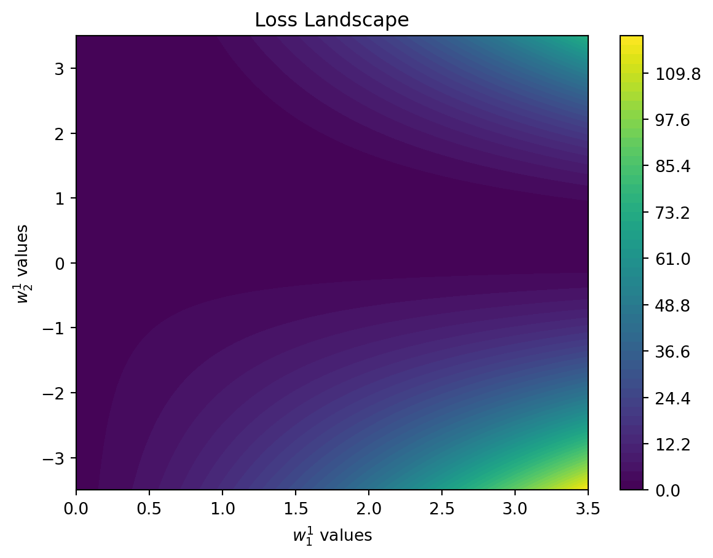
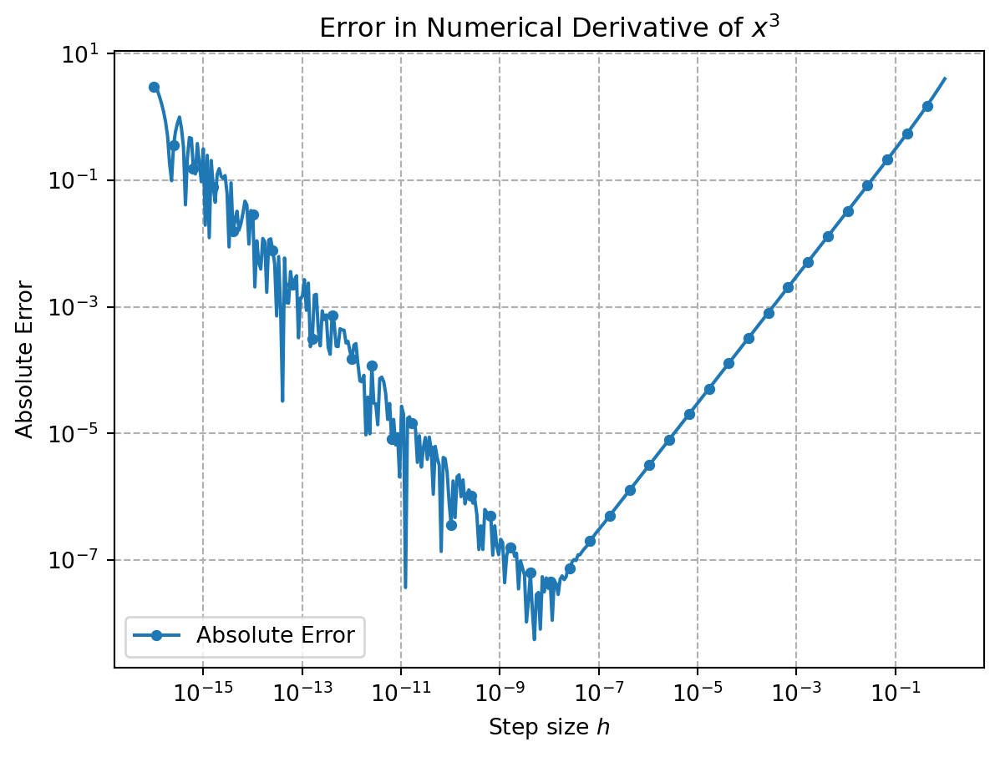

When we build neural networks, we tune weights to ensure that the outputs are close to what we want them to be.
The power of deep learning is that having many layers of weights allows us to learn very complex functions (i.e. mappings from input to output).
Here, we want to understand how to systematically tune the weights to achieve this.
Neural Network Visualization
Input:
Weight 1-1:
Weight 1-2:
Weight 2-1:
Weight 2-2:
Target Output:
Loss: 0.0000
When we think of the tiny neural network in the widget above one might think of many different ways for optimizing the weights (line strenghts) of this model.
Option 1: Randomly choose weights
One option you might try is to randomly try different weight values to then find one that minimizes the difference between ground truth and prediction (i.e., minimizes the loss). While we might be lucky for this toy example, we can imagine that it might take a long time until we guessed all the weights in a billion-parameter model (e.g. GPT-3) correctly.
Using a strategy like a grid search (in which you loop over a range of possible weight values for all weights) will also only work for small models (think of the \(100^4\) combinations you would have to just try of 100 trial values for 4 weights).
Option 2: Using numerical gradients
When we think of our neural network, the loss forms a landscape, that can be very complex. In our simple example below, it looks as follows:
Code
import numpy as npimport matplotlib.pyplot as pltdef relu(x):return np.maximum(0, x)def linear(x):return xdef forward_pass(inputs, weights1, weights2, record_activation=False): hidden_layer_input = np.dot(inputs, weights1) hidden_layer_output = relu(hidden_layer_input) output_layer_input = np.dot(hidden_layer_output, weights2) output = linear(output_layer_input)if record_activation:return output, hidden_layer_outputreturn outputdef compute_mse_loss(predicted, target): loss = np.mean(np.square(predicted - target))return loss# Simplify the scenario for clear visualization# Set the target output and inputtarget =1.9input_val =0.8# A simple input value to keep the forward pass straightforward# Define a range for weight updates that centers around an expected minimumweight_range =3.5# Explore weights within [-2, 2] for both weightsnum_steps =100# Increase the number of steps for finer resolutionstep_size = weight_range / num_stepsweight1_1_range = np.linspace(0, weight_range, 2* num_steps +1) # Start from 0 to weight_rangeweight2_1_range = np.linspace(-weight_range, weight_range, 2* num_steps +1) # Keep full range for weight2_1weight1_1_vals, weight2_1_vals = np.meshgrid(weight1_1_range, weight2_1_range)fixed_weight1_2 =1.2fixed_weight2_2 =0.8losses = np.zeros((len(weight1_1_range), len(weight2_1_range)))# Recalculate the losses with the updated rangefor i inrange(len(weight1_1_range)):for j inrange(len(weight2_1_range)): current_weights1 = np.array([weight1_1_vals[i, j], fixed_weight1_2]) current_weights2 = np.array([weight2_1_vals[i, j], fixed_weight2_2]) output = forward_pass(np.array([[input_val]]), current_weights1.reshape(1, 2), current_weights2.reshape(2, 1)) losses[i, j] = compute_mse_loss(output, np.array([[target]]))# Create a 2D contour plot to visualize the loss landscapeplt.figure()heatmap = plt.contourf(weight1_1_vals, weight2_1_vals, losses, levels=np.linspace(losses.min(), losses.max(), 50), cmap='viridis')plt.colorbar()plt.title('Loss Landscape')plt.xlabel('$w_1^1$ values')plt.ylabel('$w_2^1$ values')plt.show()

To create this plot, we keep two weights fixed, vary two others and then analyze how the loss looks like. We see that there is a clear structure that might remind us of a hilly landscape.
With the random search we have been randomly jumping around on this landscape. But seeing this image, we might also decide that we want to follow the path downhill; ultimately, our goal is to find the valley (the lowest loss). That is, the best value to try next should not be a random one but one downhill from where we are now.
This direction (“downhill”) is the slope of our hilly landscape, i.e. the gradient.
Based on the formula above, we might decide to compute a gradient numerically using finite differences.
The problem is that we need to perform many evaluations of the loss to make it work (one per weight, which can be a lot for current frontier models). In addition, we add up errors because \(h\) will be different from \(0\) (truncation error) and because be have to work with machine precision and hence add rounding errors.
Note
If we compute numerical gradients, we have two main sources of error. One stems from the fact that \(h\) in the euqation above is not exactly 0. This is known as truncation error. On the other hand, the finite difference equation leads to numberical problems (rounding errors) as two almost identical numbers are substracted and then divided by a very small number.
Code
import numpy as npimport matplotlib.pyplot as plt# Define the function and its exact derivativedef f(x):return x**3def df_exact(x):return3*x**2# Point at which to evaluate the derivativex =1# Generate a range of h values (logarithmically spaced to cover small to larger values)h_values = np.logspace(-16, 0, 400)numerical_derivatives = []# Calculate numerical derivative using forward difference for each hfor h in h_values: numerical_derivative = (f(x+h) - f(x)) / h numerical_derivatives.append(numerical_derivative)# Calculate exact derivativeexact_derivative = df_exact(x)# Calculate errorserrors = np.abs(exact_derivative - np.array(numerical_derivatives))# Plottingplt.figure()plt.loglog(h_values, errors, label='Absolute Error', marker='o', linestyle='-', markersize=4, markevery=10)plt.xlabel('Step size $h$')plt.ylabel('Absolute Error')plt.title('Error in Numerical Derivative of $x^3$')plt.legend()plt.grid(True, which="both", linestyle='--')plt.show()

Option 3: Analytical gradients
Obviously, we could save many evaluations when we could write down the derviates for a given functions. However, for our neural networks we cannot do this by hand.
The question is thus how we efficiently compute the gradient of function such as a neural network.
Evaluating analytical gradients for any function: Backpropagation
Calculus 101: Rules for computing derivatives
Let’s assume
\[
f(x,y) = xy
\]
then the partial derivates are
\[
\frac{\partial f}{\partial x} = y \quad \frac{\partial f}{\partial y} = x
\]
An important rule for differentiation we will need to apply frequently, as it focusses on function composition, is the chain rule
How do you intuitively understand that? Let’s borrow from George F. Simmons:
If a car travels twice as fast as a bicycle and the bicycle is four times as fast as a walking man, then the car travels 2 × 4 = 8 times as fast as the man.
With
\(x\) the position of the car
\(y\) the position of the bicycle
\(z\) the position of the walking man
The rate of change in relative positions is given by terms like \(\frac{\mathrm{d}x}{\mathrm{d}y}\), which gives us the change in relative position of bicycle and car. It we now aim to compute the rate of change of relative position of car to the walking man, \(\frac{\mathrm{d}x}{\mathrm{d}z}\), we find
\[
\frac{\mathrm{d}x}{\mathrm{d}x} = \frac{\mathrm{d}x}{\mathrm{d}y} \frac{\mathrm{d}y}{\mathrm{d}z} = \underbrace{2}_{\text{car twice as fast as bicycle}} \cdot \underbrace{4}_{\text{bicycle is four times as fast as walking man}} = 8
\]
Computing derivatives as in calculus 101
In neural networks, we nest functions. That is, will end up differentiating compound expression of the form
\[
{\displaystyle h(x)=f(g(x))}
\]
For instance, you might look at a simple regularized logistic regression:
Puh! That was a lot of copying and pasting and quite error prone. And it might be quite costly to just directly evaluate such an expression (we might end up with an exponentially large expression, “expression swell”).
There must be a better way.
Making it efficient with caching
One thing that we can observe is that we need to do the same computation several times. For instance, \(wx +b\) is evaluated two times. We code trade off space and time complexity by caching this using an intermediate variable.
If we do this systematically, we can very efficiently compute gradients – in a form that is symmetric to the computation of the function itself (and those with basically the same cost).
General computation with intermediate values
As a simple example, let’s start with
\[
f(x,y,z) = (x+y)z
\]
It can be convienient to introduce the following intermediate variable
Note that many of the terms we computed can be reused.
Application to neural networks
Neural networks are more complicated circuits – nested functions.
Let’s assume a very simply case
\[
y=\frac{1}{1+\exp (-(wx+b))}.
\]
We can write it using the chaining of the following primitive operations (forming our computation graph).
\[
t_1 = wx
\]\[
t_2 = t_1 + b
\]
\[
t_3 = −t_2
\]
\[
t_4 = \exp(t_3)
\]
\[
t_5 = 1 + t_4
\]
\[
t_6 = 1/t_5
\]
(this list of evaluations is sometimes called evaluation trace or Wengert list).
As we would like again get the derivative w.r.t to the output like the loss
\[
L = (t_6-y)^2,
\]
which we can write down with some more evaluations
\[
t_7 = t_6-t
\]
\[
t_8 = t_7^2.
\]
We call this evaluation the forward pass.
The beauty of backprop is that the computation for the derivative follows the same structure as the computation of the function itself (and, for example, is not drastically more complex as one might expect). To see this, we can try out:
Armed with those partial derivatives, we can now multiply them to get the final goal – the derivative of the loss w.r.t. the weight (\(\frac{\partial L}{\partial w}\)).
In practice, we would use autodifferentiation using a datastructure as follows to keep track of the computation graph.
Code
# code taken from https://github.com/karpathy/micrograd/blob/master/trace_graph.ipynbfrom graphviz import Digraphdef trace(root): nodes, edges =set(), set()def build(v):if v notin nodes: nodes.add(v)for child in v._prev: edges.add((child, v)) build(child) build(root)return nodes, edgesdef draw_dot(root, format='svg', rankdir='LR'):""" format: png | svg | ... rankdir: TB (top to bottom graph) | LR (left to right) """assert rankdir in ['LR', 'TB'] nodes, edges = trace(root) dot = Digraph(format=format, graph_attr={'rankdir': rankdir}) #, node_attr={'rankdir': 'TB'})for n in nodes: dot.node(name=str(id(n)), label ="{ data %.4f | grad %.4f }"% (n.data, n.grad), shape='record')if n._op: dot.node(name=str(id(n)) + n._op, label=n._op) dot.edge(str(id(n)) + n._op, str(id(n)))for n1, n2 in edges: dot.edge(str(id(n1)), str(id(n2)) + n2._op)return dot
# taken from microgradimport numpy as npclass Value:""" stores a single scalar value and its gradient """def__init__(self, data, _children=(), _op=''):self.data = dataself.grad =0# internal variables used for autograd graph constructionself._backward =lambda: Noneself._prev =set(_children)self._op = _op # the op that produced this node, for graphviz / debugging / etcdef__add__(self, other): other = other ifisinstance(other, Value) else Value(other) out = Value(self.data + other.data, (self, other), '+')# propagate the gradient on out to parents# i.e. self and other # since out = self + other, then d(out)/dself = 1 and d(out)/dother = 1# so we can just add the gradient to both parentsdef _backward():self.grad = out.grad other.grad = out.grad out._backward = _backwardreturn outdef__mul__(self, other): other = other ifisinstance(other, Value) else Value(other) out = Value(self.data * other.data, (self, other), '*')def _backward():self.grad = other.data * out.grad other.grad =self.data * out.grad out._backward = _backwardreturn outdef__pow__(self, other):assertisinstance(other, (int, float)), "only supporting int/float powers for now" out = Value(self.data**other, (self,), f'**{other}')def _backward():self.grad = (other *self.data**(other-1)) * out.grad out._backward = _backwardreturn outdef exp(self): out = Value(np.exp(self.data), (self,), 'exp')def _backward():self.grad = np.exp(self.data) * out.grad out._backward = _backwardreturn outdef__neg__(self): # -selfreturnself*-1def__radd__(self, other): # other + selfreturnself+ otherdef__sub__(self, other): # self - otherreturnself+ (-other)def__rsub__(self, other): # other - selfreturn other + (-self)def__rmul__(self, other): # other * selfreturnself* otherdef__truediv__(self, other): # self / otherreturnself* other**-1def__rtruediv__(self, other): # other / selfreturn other *self**-1def__repr__(self):returnf"Value(data={self.data}, grad={self.grad})"
We can now write down our expression from before using the Value class
Now, we can perform the backward pass by calling the _backward function of the loss node, which will in turn call the _backward functions of all its parents, and so on, until the entire graph has been visited.
To avoid calling the backward function multiple times, we can implement a backprop function that traverses the graph in reverse topological order and calls the _backward function of each node only once.
Topological sorting can be implemented using the following code
topo = []visited =set()def build_topo(v):if v notin visited: visited.add(v)for child in v._prev: build_topo(child) topo.append(v)
Why does this sorting algorithm work?
The algorithm is a depth-first search (DFS)
The deepest nodes are added to the topo list first
Recursiveness ensures that nodes another node depends on are added first (topo.append only happens after the recursive call)
Note that this algorithm does not work for cyclic graphs.
Differentiation for Hackers has nice Julia code that showcases what makes autodiff special (and different from symbolic and numeric differentiation).
Kyle Cranmer has a useful intro to autodiff. I took the sympy example from there.
Further reading
Who “invented” backpropagation
As with many popular things, there is some debate on “who was first”. You can find some discussion on this here.
“Original” Backprop Paper
In the context of training neural networks, backpropagation was popularized in a beatiful paper by David E. Rumelhart et al. It is beautiful and you should read it.
and \[
\frac{\mathrm{d}y}{\mathrm{d}x} = \frac{\mathrm{d}y}{\mathrm{d}b}\left(\frac{\mathrm{d}b}{\mathrm{d}a} \frac{\mathrm{d}a}{\mathrm{d}x} \right)
\]
The first mode is called “reverse mode” autodiff as the gradient flow is opposite to the data flow. The second mode is called “forward mode” autodiff as the order of computation is the same for the gradient computation as for the computation of the function itself.
Backpropagation is a special case of reverse mode autodiff.
Which mode is more efficient depends on whether the input dimension is smaller than the output dimension. If the output dimension is smaller than the input dimension (which is the case for training neural networks) the reverse mode is more efficient as only one application of the reverse mode is needed to compute the gradients.
The forward mode, however is of \(\mathcal{O(n)}\), where \(n\) is the number of inputs. If the number of inputs is small (or even just one) and the number of outputs is large, e.g. \(\mathbb{R} \to \mathbb{R^m}\), then the forward mode will be more efficient.
Symbolic differentiation vs. numerical differentiation vs. autodiff
Numerical differentiation involves computing a term like \(\frac{\partial f}{\partial x_i} \approx \frac{f(x+h) - f(x)}{h}\) for a small \(h\). While this is might be relatively easy to implement, but requires \(\mathcal{O(n)}\) evaluations for \(n\) gradients, and can be numerically unstable (dividing by small number, subtracting two numbers of almost the same value).
Symbolic differentation can be performed with systems like Maple, Sympy, or Mathematica. This gives us expressions for the derivatives, which might grow exponentially large (in blind application).
Code
import sympy x = sympy.symbols('x')def base_function(x): return x**2+3*x +4
Autodiff can easily deal with control flows
Dual numbers
Dual numbers are numbers of the form \(v+\dot{v}\epsilon\), where \(\epsilon\) has the special property that it is non-zero and \(\epsilon^2 = 0\).
They behave as one might expect:
\[
(v+\dot{v}\epsilon) + (u + \dot{u}\epsilon) = (v + u) + (\dot{v} + \dot{u})\epsilon
\]
This means that we directly compute f(x) and the derivative (scaled by \(\dot{v}\)). Thus, we can simulatanously compute the values of functions and derivatives. A naiive implementation might look as follows
import math class DualNumber:def__init__(self, real, dual):self.real = real # Real partself.dual = dual # Dual part (coefficient of epsilon)def__repr__(self):returnf"{self.real} + {self.dual}ε"def__add__(self, other):# Addition with another DualNumber or scalarifisinstance(other, DualNumber):return DualNumber(self.real + other.real, self.dual + other.dual)else:return DualNumber(self.real + other, self.dual)def__mul__(self, other):# Multiplication with another DualNumber or scalarifisinstance(other, DualNumber):return DualNumber(self.real * other.real, self.real * other.dual +self.dual * other.real)else:return DualNumber(self.real * other, self.dual * other)def__radd__(self, other):returnself.__add__(other)def__rmul__(self, other):returnself.__mul__(other)def exp(self):# Exponential function exp_real = math.exp(self.real)return DualNumber(exp_real, exp_real *self.dual)def square(self):# Squaring the dual numberreturn DualNumber(self.real**2, 2*self.real *self.dual)
def complex_function(x):return x.square() * x.exp() +3*x# Correcting the differentiation at x = 1x = DualNumber(1, 1)result = complex_function(x)result.real, result.dual
Autodiff, and thus differentiable programs, are now becoming a first-class citizen in programming languages—see, for example, the differentiable programming manifesto.
In the field of computational materials science a few nice examples include
---title: 'Developing an intuition for backpropagation'description: <i>Efficient long-distant errorpropagation</i>image: ""sidebar: falsecategories: - machine-learningdate: "2/23/2024"format: html: code-fold: true code-tools: true---## Setting weights in neural networks When we build neural networks, we tune weights to ensure that the outputs are close to what we want them to be. The power of deep learning is that having many layers of weights allows us to learn very complex functions (i.e. mappings from input to output). Here, we want to understand how to systematically tune the weights to achieve this. ```{=html} <style> .flex-container { display: flex; justify-content: center; align-items: start; /* Adjust this as needed */ } .slider-container { flex: 2; padding: 1px; display: flex; flex-direction: column; justify-content: center; } .visualization-container { flex: 2; /* Gives the visualization more room */ padding: 1px; } .slider-label { margin-bottom: 10px; color: white; } </style> <head> <meta charset="UTF-8" /> <title>Neural Network Visualization</title> <script src="https://d3js.org/d3.v6.min.js"></script> <style> .slider-label { display: block; margin-top: 10px; } #outputLabel { margin-top: 10px; } </style> </head> <body> <div class="flex-container"> <div class="slider-container"> <div class="slider-label"> Input: <input type="range" min="0" max="1" step="0.01" value="0.5" id="inputSlider" /> </div> <div class="slider-label"> Weight 1-1: <input type="range" min="-1" max="1" step="0.01" value="0.5" id="weight1_1Slider" /> </div> <div class="slider-label"> Weight 1-2: <input type="range" min="-1" max="1" step="0.01" value="0.5" id="weight1_2Slider" /> </div> <div class="slider-label"> Weight 2-1: <input type="range" min="-1" max="1" step="0.01" value="0.5" id="weight2_1Slider" /> </div> <div class="slider-label"> Weight 2-2: <input type="range" min="-1" max="1" step="0.01" value="0.5" id="weight2_2Slider" /> </div> <div class="slider-label"> Target Output: <input type="range" min="0" max="1" step="0.01" value="0.5" id="targetOutputSlider" /> </div> <bf><div id="outputLabel">Loss: 0.0000</div></bf> </div> <div class="visualization-container"></div> <svg id="networkVisualization" width="600" height="400"></svg> </div> <script> document.addEventListener("DOMContentLoaded", function () { function relu(x) { return Math.max(0, x); } function forwardPass(inputs, weights1, weights2) { let hiddenLayerInput = [inputs * weights1[0], inputs * weights1[1]]; let hiddenLayerOutput = hiddenLayerInput.map(relu); let outputLayerInput = hiddenLayerOutput[0] * weights2[0] + hiddenLayerOutput[1] * weights2[1]; return outputLayerInput; } function computeMSELoss(predicted, target) { return Math.pow(predicted - target, 2); } const colorScale = d3.scaleLinear() .domain([-1, 0, 1]) .range(["blue","red"]); function drawNetwork(selector, weights1, weights2, inputs, hiddenActivations, outputActivation) { const svg = d3.select(selector); svg.selectAll("*").remove(); // Clear previous drawing const width = +svg.attr("width"); const height = +svg.attr("height"); // Define neuron positions const positions = { input: [{x: width * 0.2, y: height / 2, value: inputs}], hidden: [ {x: width * 0.5, y: height * 0.3, value: hiddenActivations[0]}, {x: width * 0.5, y: height * 0.7, value: hiddenActivations[1]} ], output: [{x: width * 0.8, y: height / 2, value: outputActivation[0]}] }; // Draw connections and labels for weights positions.input.forEach((inputPos, i) => { positions.hidden.forEach((hiddenPos, j) => { svg.append("line") .attr("x1", inputPos.x) .attr("y1", inputPos.y) .attr("x2", hiddenPos.x) .attr("y2", hiddenPos.y) .attr("stroke", colorScale(weights1[j])) .attr("stroke-width", Math.abs(weights1[j]) * 2 + 1); // Label for weight svg.append("text") .attr("x", (inputPos.x + hiddenPos.x) / 2 -10) .attr("y", (inputPos.y + hiddenPos.y) / 2 - (j === 0 ? 20 : -40)) .attr("dy", "-5") .attr("text-anchor", "middle") .attr("fill", "white") .text(`weight 1-${j+1}: ${weights1[j].toFixed(2)}`); }); }); positions.hidden.forEach((hiddenPos, i) => { svg.append("line") .attr("x1", hiddenPos.x) .attr("y1", hiddenPos.y) .attr("x2", positions.output[0].x) .attr("y2", positions.output[0].y) .attr("stroke", colorScale(weights2[i])) .attr("stroke-width", Math.abs(weights2[i]) * 2 + 1); // Label for weight svg.append("text") .attr("x", (hiddenPos.x + positions.output[0].x) / 2 + 10) .attr("y", (hiddenPos.y + positions.output[0].y) / 2 - (i === 0 ? 20 : -40)) .attr("dy", "-5") .attr("text-anchor", "middle") .attr("fill", "white") .text(`weight 2-${i+1}: ${weights2[i].toFixed(2)}`); }); // Draw neurons and labels for activations [...positions.input, ...positions.hidden, ...positions.output].forEach(pos => { svg.append("circle") .attr("cx", pos.x) .attr("cy", pos.y) .attr("r", 20) .attr("fill", colorScale(pos.value)) .attr("stroke", "black"); // Label for neuron value svg.append("text") .attr("x", pos.x) .attr("y", pos.y) .attr("dy", "5") .attr("text-anchor", "middle") .attr("fill", "white") .text(pos.value.toFixed(2)); }); } function updateVisualization() { let inputs = parseFloat(document.getElementById("inputSlider").value); let weights1 = [ parseFloat(document.getElementById("weight1_1Slider").value), parseFloat(document.getElementById("weight1_2Slider").value), ]; let weights2 = [ parseFloat(document.getElementById("weight2_1Slider").value), parseFloat(document.getElementById("weight2_2Slider").value), ]; let targetOutput = parseFloat( document.getElementById("targetOutputSlider").value ); let output = forwardPass(inputs, weights1, weights2); let loss = computeMSELoss(output, targetOutput); document.getElementById( "outputLabel" ).innerText = `Loss: ${loss.toFixed( 4 )}`; drawNetwork( "#networkVisualization", weights1, weights2, inputs, weights1.map(relu), [output] ); } document.querySelectorAll("input[type=range]").forEach((slider) => { slider.addEventListener("input", updateVisualization); }); updateVisualization(); // Initial visualization }); </script> </body>```When we think of the tiny neural network in the widget above one might think of many different ways for optimizing the weights (line strenghts) of this model.### Option 1: Randomly choose weights One option you might try is to randomly try different weight values to then find one that minimizes the difference between ground truth and prediction (i.e., minimizes the loss). While we might be lucky for this toy example, we can imagine that it might take a long time until we guessed all the weights in a billion-parameter model (e.g. GPT-3) correctly. Using a strategy like a grid search (in which you loop over a range of possible weight values for all weights) will also only work for small models (think of the $100^4$ combinations you would have to just try of 100 trial values for 4 weights). ### Option 2: Using numerical gradients When we think of our neural network, the loss forms a landscape, that can be very complex. In our simple example below, it looks as follows:```{python}import numpy as npimport matplotlib.pyplot as pltdef relu(x):return np.maximum(0, x)def linear(x):return xdef forward_pass(inputs, weights1, weights2, record_activation=False): hidden_layer_input = np.dot(inputs, weights1) hidden_layer_output = relu(hidden_layer_input) output_layer_input = np.dot(hidden_layer_output, weights2) output = linear(output_layer_input)if record_activation:return output, hidden_layer_outputreturn outputdef compute_mse_loss(predicted, target): loss = np.mean(np.square(predicted - target))return loss# Simplify the scenario for clear visualization# Set the target output and inputtarget =1.9input_val =0.8# A simple input value to keep the forward pass straightforward# Define a range for weight updates that centers around an expected minimumweight_range =3.5# Explore weights within [-2, 2] for both weightsnum_steps =100# Increase the number of steps for finer resolutionstep_size = weight_range / num_stepsweight1_1_range = np.linspace(0, weight_range, 2* num_steps +1) # Start from 0 to weight_rangeweight2_1_range = np.linspace(-weight_range, weight_range, 2* num_steps +1) # Keep full range for weight2_1weight1_1_vals, weight2_1_vals = np.meshgrid(weight1_1_range, weight2_1_range)fixed_weight1_2 =1.2fixed_weight2_2 =0.8losses = np.zeros((len(weight1_1_range), len(weight2_1_range)))# Recalculate the losses with the updated rangefor i inrange(len(weight1_1_range)):for j inrange(len(weight2_1_range)): current_weights1 = np.array([weight1_1_vals[i, j], fixed_weight1_2]) current_weights2 = np.array([weight2_1_vals[i, j], fixed_weight2_2]) output = forward_pass(np.array([[input_val]]), current_weights1.reshape(1, 2), current_weights2.reshape(2, 1)) losses[i, j] = compute_mse_loss(output, np.array([[target]]))# Create a 2D contour plot to visualize the loss landscapeplt.figure()heatmap = plt.contourf(weight1_1_vals, weight2_1_vals, losses, levels=np.linspace(losses.min(), losses.max(), 50), cmap='viridis')plt.colorbar()plt.title('Loss Landscape')plt.xlabel('$w_1^1$ values')plt.ylabel('$w_2^1$ values')plt.show()```To create this plot, we keep two weights fixed, vary two others and then analyze how the loss looks like.We see that there is a clear structure that might remind us of a hilly landscape. With the random search we have been randomly jumping around on this landscape. But seeing this image, we might also decide that we want to follow the path downhill; ultimately, our goal is to find the valley (the lowest loss).That is, the best value to try next should not be a random one but one downhill from where we are now.This direction ("downhill") is the slope of our hilly landscape, i.e. the gradient.$$\frac{\mathrm{d}f(x)}{\mathrm{d}x} = \lim_{h\to0} \frac{f(x+h) - f(x)}{h}$$Based on the formula above, we might decide to compute a gradient numerically using [finite differences](https://en.wikipedia.org/wiki/Finite_difference).The problem is that we need to perform _many evaluations_ of the loss to make it work (one per weight, which can be a lot for current frontier models). In addition, we add up errors because $h$ will be different from $0$ (truncation error) and because be have to work with machine precision and hence add rounding errors.::: {.callout-note}If we compute numerical gradients, we have two main sources of error. One stems from the fact that $h$ in the euqation above is not exactly 0. This is known as truncation error. On the other hand, the finite difference equation leads to numberical problems (rounding errors) as two almost identical numbers are substracted and then divided by a very small number. ```{python}import numpy as npimport matplotlib.pyplot as plt# Define the function and its exact derivativedef f(x):return x**3def df_exact(x):return3*x**2# Point at which to evaluate the derivativex =1# Generate a range of h values (logarithmically spaced to cover small to larger values)h_values = np.logspace(-16, 0, 400)numerical_derivatives = []# Calculate numerical derivative using forward difference for each hfor h in h_values: numerical_derivative = (f(x+h) - f(x)) / h numerical_derivatives.append(numerical_derivative)# Calculate exact derivativeexact_derivative = df_exact(x)# Calculate errorserrors = np.abs(exact_derivative - np.array(numerical_derivatives))# Plottingplt.figure()plt.loglog(h_values, errors, label='Absolute Error', marker='o', linestyle='-', markersize=4, markevery=10)plt.xlabel('Step size $h$')plt.ylabel('Absolute Error')plt.title('Error in Numerical Derivative of $x^3$')plt.legend()plt.grid(True, which="both", linestyle='--')plt.show()```:::### Option 3: Analytical gradientsObviously, we could save many evaluations when we could write down the derviates for a given functions. However, for our neural networks we cannot do this by hand. The question is thus how we _efficiently_ compute the gradient of function such as a neural network.## Evaluating analytical gradients for any function: Backpropagation### Calculus 101: Rules for computing derivativesLet's assume $$f(x,y) = xy$$then the _partial derivates_ are $$\frac{\partial f}{\partial x} = y \quad \frac{\partial f}{\partial y} = x$$An important rule for differentiation we will need to apply frequently, as it focusses on function composition, is the chain rule $$(g(f(x)))^{\prime}=(g \circ f)^{\prime}(x)=g^{\prime}(f(x)) f^{\prime}(x)$$with $g \circ f$ being function composition $x \to f(x) \to g(f(x))$.In the multivariate case, we would write$$\frac{\mathrm{d}}{\mathrm{d} t} f(x(t), y(t))=\frac{\partial f}{\partial x} \frac{\mathrm{d} x}{\mathrm{~d} t}+\frac{\partial f}{\partial y} \frac{\mathrm{d} y}{\mathrm{~d} t}.$$::: {.callout-tip}#### Intuitive understanding of chain rule How do you intuitively understand that? Let's borrow from [George F. Simmons](https://ia802808.us.archive.org/7/items/GeorgeSimmonsCalculusWithAnalyticGeometry1996McGrawHillScienceEngineeringMath/George%20Simmons%20-%20Calculus%20With%20Analytic%20Geometry%20%281996%2C%20McGraw-Hill%20Science_Engineering_Math%29.pdf):> If a car travels twice as fast as a bicycle and the bicycle is four times as fast as a walking man, then the car travels 2 × 4 = 8 times as fast as the man.With - $x$ the position of the car- $y$ the position of the bicycle - $z$ the position of the walking man The rate of change in relative positions is given by terms like $\frac{\mathrm{d}x}{\mathrm{d}y}$, which gives us the change in relative position of bicycle and car. It we now aim to compute the rate of change of relative position of car to the walking man, $\frac{\mathrm{d}x}{\mathrm{d}z}$, we find $$\frac{\mathrm{d}x}{\mathrm{d}x} = \frac{\mathrm{d}x}{\mathrm{d}y} \frac{\mathrm{d}y}{\mathrm{d}z} = \underbrace{2}_{\text{car twice as fast as bicycle}} \cdot \underbrace{4}_{\text{bicycle is four times as fast as walking man}} = 8 $$:::### Computing derivatives as in calculus 101In neural networks, we nest functions. That is, will end up differentiating compound expression of the form $${\displaystyle h(x)=f(g(x))}$$For instance, you might look at a simple regularized logistic regression: $$L = \frac{1}{2}\left(\sigma(wx +b) -t \right)^2 + \frac{\lambda}{2} w^2,$$where $\sigma$ is some activation function (e.g. the sigmoid).If we now want to know what the influence of the weight $w$ is, we can differentiate the loss with respect to $w$: $$\begin{align}\frac{\partial L}{\partial w} &= \frac{\partial}{\partial w} \left[\frac{1}{2}\left(\sigma(wx +b) -t \right)^2 + \frac{\lambda}{2} w^2 \right]\\&= \frac{1}{2}\frac{\partial}{\partial w} \left(\sigma(wx +b) -t \right)^2 + \frac{\lambda}{2}\frac{\partial}{\partial w} w^2 \\&= \left(\sigma(wx+b) - t\right)\frac{\partial}{\partial w}\left(\sigma(wx+b)-t\right) + \lambda w \\&= \left(\sigma(wx+b) - t\right)\sigma'(wx +b)\frac{\partial}{\partial w}(wx+b) + \lambda w \\&= \left(\sigma(wx+b) - t\right)\sigma'(wx +b)x + \lambda w\end{align}$$Puh! That was a lot of copying and pasting and quite error prone. And it might be quite costly to just directly evaluate such an expression (we might end up with an exponentially large expression, "expression swell").There must be a better way.### Making it efficient with caching One thing that we can observe is that we need to do the same computation several times. For instance, $wx +b$ is evaluated two times. We code trade off space and time complexity by caching this using an intermediate variable. If we do this systematically, we can very efficiently compute gradients -- in a form that is symmetric to the computation of the function itself (and those with basically the same cost). #### General computation with intermediate valuesAs a simple example, let's start with $$f(x,y,z) = (x+y)z$$It can be convienient to introduce the following intermediate variable$$p = (x + y) $$We can then write $$f = pz$$and also compute some partial derivatives $$\frac{\partial f}{\partial q} = z \quad \frac{\partial f}{\partial z} = q$$and we also know how to differentiate $p$ for $x$ and $y$:$$\frac{\partial p}{\partial x} = 1 \quad \frac{\partial p}{\partial y} =1. $$Using the _chain rule_ we can combine those findings, as the chain rule states that we need to multiply the gradients to chain them: $$\frac{\partial f(p,z)}{\partial x} = \frac{\partial f(p, x)}{\partial p} \frac{\partial p(x,y)}{\partial x} $$This typically means that two numbers are multiplied. If we try it for the example above we can use the following code. Note how we _cache_ intermediate results (i.e. trade off time- vs. space-complexity). ```{python}#| code-fold: false# the inputs we will use x =-2y =5z =-4# let's compute our intermediate termst1 = x + y f = t1 * z```Now, we can look at the derivatives we got above```{python}#| code-fold: falsedt1dx =1.dt1dy =1.dfdt1 = zdfdz = t1```Now, we can use the chain rule to combine them ```{python}#| code-fold: falsedfdx = dfdt1 * dt1dxdfdy = dfdt1 * dt1dy```The sensitivity to $x$, $y$, and $z$ is hence```{python}#| code-fold: falseprint(dfdz, dfdy, dfdz)```Before we move ahead, realize what we did: We computed gradients by recursively applying the chain rule, starting at the end: - our computation graph is x -> p -> f- we first compute df/dp, then dp/dx. Chaining them gives us df/dx = df/dp dp/dxWe can write this in a more general form as follows.If we assume we have $N$ intermediate variables $t_N$, with $t_N$ being our output $f$, by definition we have$$\frac{\mathrm{d}{f}}{\mathrm{d}t_N} = 1$$For the other intermediate variables we have: $$\begin{align}\frac{\mathrm{d}f}{\mathrm{d} t_{n-1}} &= \frac{\mathrm{d}f}{\mathrm{d}f_{n}} \frac{\mathrm{d}f_{n}}{\mathrm{d}t_{n-1}} \\\frac{\mathrm{d}f}{\mathrm{d} t_{n-2}} &= \frac{\mathrm{d}f}{\mathrm{d}f_{n}} \frac{\mathrm{d}f_{n}}{\mathrm{d}t_{n-1}} \frac{\mathrm{d}f_{n-1}}{\mathrm{d}t_{n-2}} \\\frac{\mathrm{d}f}{\mathrm{d} t_{n-3}} &= \frac{\mathrm{d}f}{\mathrm{d}f_{n}} \frac{\mathrm{d}f_{n}}{\mathrm{d}t_{n-1}} \frac{\mathrm{d}f_{n-1}}{\mathrm{d}t_{n-2}} \frac{\mathrm{d}f_{n-2}}{\mathrm{d}t_{n-3}} \\\frac{\mathrm{d}f}{\mathrm{d} t_i} &= \frac{\mathrm{d}f}{\mathrm{d}f_{n}} \frac{\mathrm{d}f_{n}}{\mathrm{d}t_{n-1}} \frac{\mathrm{d}f_{n-1}}{\mathrm{d}t_{n-2}} \ldots \frac{\mathrm{d}f_{i+1}}{\mathrm{d}t_{i}}\end{align} $$Note that many of the terms we computed can be reused.### Application to neural networksNeural networks are more complicated circuits -- nested functions.Let's assume a very simply case$$y=\frac{1}{1+\exp (-(wx+b))}.$$We can write it using the chaining of the following primitive operations (forming our computation graph). $$t_1 = wx$$$$t_2 = t_1 + b$$$$t_3 = −t_2$$$$t_4 = \exp(t_3)$$$$t_5 = 1 + t_4$$$$t_6 = 1/t_5$$(this list of evaluations is sometimes called evaluation trace or Wengert list).As we would like again get the derivative w.r.t to the output like the loss$$L = (t_6-y)^2, $$which we can write down with some more evaluations $$t_7 = t_6-t$$$$t_8 = t_7^2.$$We call this evaluation the _forward pass_.The beauty of backprop is that the computation for the derivative follows the same structure as the computation of the function itself (and, for example, is not drastically more complex as one might expect). To see this, we can try out: $$\begin{align}\frac{\partial t_8}{\partial t_8} &= 1 \\\frac{\partial t_8}{\partial t_7} &= 2 t_7 \\\frac{\partial t_7}{\partial t_6} & = 1 \\\frac{\partial t_6}{\partial t_5} &= -1/t_5^2 \\\frac{\partial t_5}{\partial t_4} &= 1\\\frac{\partial t_4}{\partial t_3} &= \exp(t_3) t_3 \\\frac{\partial t_3}{\partial t_2} &= - 1\\\frac{\partial t_2}{\partial t_1} &= 1 \\\frac{\partial t_1}{\partial w} &= x\end{align}$$Armed with those partial derivatives, we can now multiply them to get the final goal -- the derivative of the loss w.r.t. the weight ($\frac{\partial L}{\partial w}$).$$\begin{align}\frac{\partial t_8}{\partial t_6} &= \frac{\partial t_8}{\partial t_7} \frac{\partial t_7}{\partial t_6} = 2 t_7 \cdot 1 = 2(t_6 -y) \\\frac{\partial t_8}{\partial t_5} &= \frac{\partial t_8}{\partial t_6} \frac{\partial t_6}{\partial t_5} = 2(t_6 -y) \cdot \left(-\frac{1}{t_5^2} \right) = -2/t_5^2 (t_6 -y) \\\frac{\partial t_8}{\partial t_4} &= \frac{\partial t_8}{\partial t_5} \frac{\partial t_5}{\partial t_4} = -2/t_5^2 (t_6 -y) \cdot 1 = -2/t_5^2 (t_6 -y) \\\frac{\partial t_8}{\partial t_3} &= \frac{\partial t_8}{\partial t_4} \frac{\partial t_4}{\partial t_3} = -2/t_5^2 (t_6 -y) \cdot \exp(t_3) t_3 = -2/t_5^2 (t_6 -y) \cdot \exp(t_3) t_3 \\\frac{\partial t_8}{\partial t_2} &= \frac{\partial t_8}{\partial t_3} \frac{\partial t_3}{\partial t_2} = -2/t_5^2 (t_6 -y) \cdot \exp(t_3) t_3 \cdot -1 = 2/t_5^2 (t_6 -y) \cdot \exp(t_3) t_3 \\\frac{\partial t_8}{\partial t_1} &= \frac{\partial t_8}{\partial t_2} \frac{\partial t_2}{\partial t_1} = 2/t_5^2 (t_6 -y) \cdot \exp(t_3) t_3 \\\frac{\partial t_8}{\partial w} &= \frac{\partial t_8}{\partial t_1} \frac{\partial t_1}{\partial w} = 2/t_5^2 (t_6 -y) \cdot \exp(t_3) t_3 \cdot x\end{align}$$In practice, we would use autodifferentiation using a datastructure as follows to keep track of the computation graph.```{python}# code taken from https://github.com/karpathy/micrograd/blob/master/trace_graph.ipynbfrom graphviz import Digraphdef trace(root): nodes, edges =set(), set()def build(v):if v notin nodes: nodes.add(v)for child in v._prev: edges.add((child, v)) build(child) build(root)return nodes, edgesdef draw_dot(root, format='svg', rankdir='LR'):""" format: png | svg | ... rankdir: TB (top to bottom graph) | LR (left to right) """assert rankdir in ['LR', 'TB'] nodes, edges = trace(root) dot = Digraph(format=format, graph_attr={'rankdir': rankdir}) #, node_attr={'rankdir': 'TB'})for n in nodes: dot.node(name=str(id(n)), label ="{ data %.4f | grad %.4f }"% (n.data, n.grad), shape='record')if n._op: dot.node(name=str(id(n)) + n._op, label=n._op) dot.edge(str(id(n)) + n._op, str(id(n)))for n1, n2 in edges: dot.edge(str(id(n1)), str(id(n2)) + n2._op)return dot``````{python}#| code-fold: false# taken from microgradimport numpy as npclass Value:""" stores a single scalar value and its gradient """def__init__(self, data, _children=(), _op=''):self.data = dataself.grad =0# internal variables used for autograd graph constructionself._backward =lambda: Noneself._prev =set(_children)self._op = _op # the op that produced this node, for graphviz / debugging / etcdef__add__(self, other): other = other ifisinstance(other, Value) else Value(other) out = Value(self.data + other.data, (self, other), '+')# propagate the gradient on out to parents# i.e. self and other # since out = self + other, then d(out)/dself = 1 and d(out)/dother = 1# so we can just add the gradient to both parentsdef _backward():self.grad = out.grad other.grad = out.grad out._backward = _backwardreturn outdef__mul__(self, other): other = other ifisinstance(other, Value) else Value(other) out = Value(self.data * other.data, (self, other), '*')def _backward():self.grad = other.data * out.grad other.grad =self.data * out.grad out._backward = _backwardreturn outdef__pow__(self, other):assertisinstance(other, (int, float)), "only supporting int/float powers for now" out = Value(self.data**other, (self,), f'**{other}')def _backward():self.grad = (other *self.data**(other-1)) * out.grad out._backward = _backwardreturn outdef exp(self): out = Value(np.exp(self.data), (self,), 'exp')def _backward():self.grad = np.exp(self.data) * out.grad out._backward = _backwardreturn outdef__neg__(self): # -selfreturnself*-1def__radd__(self, other): # other + selfreturnself+ otherdef__sub__(self, other): # self - otherreturnself+ (-other)def__rsub__(self, other): # other - selfreturn other + (-self)def__rmul__(self, other): # other * selfreturnself* otherdef__truediv__(self, other): # self / otherreturnself* other**-1def__rtruediv__(self, other): # other / selfreturn other *self**-1def__repr__(self):returnf"Value(data={self.data}, grad={self.grad})"```We can now write down our expression from before using the `Value` class```{python}#| code-fold: false# initialize some valuesw = Value(2.0)b = Value(0.0)# define the inputx = Value(1.0)target = Value(10.0)# define the computationt1 = w * xt2 = t1 + bt3 =-1* t2t4 = t3.exp()t5 = t4 +1t6 = t5**(-1)t7 = t6 - targett8 = t7**2draw_dot(t8)```We need to seed the gradient of the loss```{python}#| code-fold: falset8.grad =1.0```Now, we can perform the backward pass by calling the `_backward` function of the loss node, which will in turn call the `_backward` functions of all its parents, and so on, until the entire graph has been visited.```{python}#| code-fold: false# #| t8._backward()print(t7.grad, t6.grad, t5.grad, t4.grad, t3.grad, w.grad, b.grad, x.grad)``````{python}#| code-fold: false# #| t7._backward()print(t7.grad, t6.grad, t5.grad, t4.grad, t3.grad, w.grad, b.grad, x.grad)``````{python}#| code-fold: false# #| t6._backward()print(t7.grad, t6.grad, t5.grad, t4.grad, t3.grad, w.grad, b.grad, x.grad)``````{python}#| code-fold: false# #| t5._backward() print(t7.grad, t6.grad, t5.grad, t4.grad, t3.grad, w.grad, b.grad, x.grad)``````{python}#| code-fold: false# #| t4._backward()print(t7.grad, t6.grad, t5.grad, t4.grad, t3.grad, w.grad, b.grad, x.grad)``````{python}#| code-fold: false# #| t3._backward()print(t7.grad, t6.grad, t5.grad, t4.grad, t3.grad, w.grad, b.grad, x.grad)``````{python}#| code-fold: false# #| t2._backward()w._backward()print(t7.grad, t6.grad, t5.grad, t4.grad, t3.grad, w.grad, b.grad, x.grad)```To avoid calling the backward function multiple times, we can implement a `backprop` function that traverses the graph in reverse topological order and calls the `_backward` function of each node only once. Topological sorting can be implemented using the following code```{python}#| code-fold: falsetopo = []visited =set()def build_topo(v):if v notin visited: visited.add(v)for child in v._prev: build_topo(child) topo.append(v)```::: {.callout-tip}### Why does this sorting algorithm work?- The algorithm is a depth-first search (DFS)- The deepest nodes are added to the `topo` list first- Recursiveness ensures that nodes another node depends on are added first (`topo.append` only happens after the recursive call)Note that this algorithm does not work for cyclic graphs.:::Now, we can simply write```{python}#| code-fold: false# #| # initialize some valuesw = Value(2.0)b = Value(0.0)# define the inputx = Value(1.0)target = Value(10.0)# define the computationt1 = w * xt2 = t1 + bt3 =-1* t2t4 = t3.exp()t5 = t4 +1t6 = t5**(-1)t7 = t6 - targett8 = t7**2```And now call the topological sorting and then `_backward` for all nodes```{python}#| code-fold: falset8.grad =1.0build_topo(t8)for v inreversed(topo): v._backward()w.grad```Note that we had to reverse the topological ordering because the deepest dependent of `t8` was first and we need to work backwards.## Lecture If you prefer watching a short video over reading you can see me go through the gist of backprop in the following video.<divstyle="position: relative; padding-bottom: 56.25%; height: 0;"><iframesrc="https://www.loom.com/embed/579ab50060044464832777e6650180f3?sid=0412526a-5a1e-4e24-ab37-691214804dc5"frameborder="0"webkitallowfullscreenmozallowfullscreenallowfullscreenstyle="position: absolute; top: 0; left: 0; width: 100%; height: 100%;"></iframe></div>## Resources 1. [Andrej Karpathy "Hacker's guide to Neural Networks"](https://karpathy.github.io/neuralnets/) inspired the comparison between random search and gradient descent. The same ideas are used in the [cs231n lecture notes](https://cs231n.github.io/optimization-1/) since he taught this class. The chain rule example is taken from the [c231n lecture notes](https://cs231n.github.io/optimization-2/)2. [Andrej Karparthy recorded a lecture in which he builds an autodiff system from scratch](https://www.youtube.com/watch?v=PaCmpygFfXo) and it inspired many parts of the notebooks, some parts (the `Value` class) are taken from his lecture.3. [Deisenroth et al. "Mathematics of Machine Learning"](https://mml-book.github.io/) has a beautiful chapter about backprop and autodiff.4. [Mark Saroufim "Automatic Differentiation Step by Step"](https://marksaroufim.medium.com/automatic-differentiation-step-by-step-24240f97a6e6) has an intuitive explaination of dual numbers and has a good resource section, including [](https://www.youtube.com/watch?v=Rs0uRQJdIcg&list=WL&index=8&t=149s)5. [Automatic Differentiation in Machine Learning: a Survey](http://arxiv.org/abs/1502.05767) is a great survey that clarifies many terms. 6. [Michael Nielsen's book](http://neuralnetworksanddeeplearning.com/chap2.html) highlights some of the "hidden" assumptions. 7. [Brandon Rohrer](https://e2eml.school/how_backpropagation_works) has a very intuitive of the chain rule in terms of the shower rate (similar to the bicycle/car/man example above).8. [Deep Learning Systems Lecture at CMU](https://dlsyscourse.org/lectures/) has a detailed slides on the algorithmic details behind autodiff.9. [Differentiation for Hackers](https://github.com/MikeInnes/diff-zoo/tree/master/src) has nice Julia code that showcases what makes autodiff special (and different from symbolic and numeric differentiation).10. [Kyle Cranmer](https://theoryandpractice.org/stats-ds-book/autodiff-tutorial.html) has a useful intro to autodiff. I took the `sympy` example from there.## Further reading### Who "invented" backpropagationAs with many popular things, there is some debate on "who was first". You can find some discussion on this [here](https://people.idsia.ch/~juergen/who-invented-backpropagation.html#BP1).#### "Original" Backprop PaperIn the context of training neural networks, backpropagation was popularized in a beatiful paper by [David E. Rumelhart et al.](https://www.nature.com/articles/323533a0) It is beautiful and you should read it. ### Backpropagation and Lagrangian As [this blog post by Tim Viera](https://timvieira.github.io/blog/post/2017/08/18/backprop-is-not-just-the-chain-rule/) and [this paper by Yann LeCun](https://arc.net/l/quote/mjznlhvx) show, the intermediate variables can be recovered by rephrasing the optimization as a constrained optimization using the Lagrangian framework.### Forward vs. reverse mode autodiffIf we have a computation graph as follows`x -> a -> b -> y `we can compute the derivative of the output with respect to the input as $$\frac{\mathrm{d}y}{\mathrm{d}x} = \frac{\mathrm{d}y}{\mathrm{d}b}\frac{\mathrm{d}b}{\mathrm{d}a} \frac{\mathrm{d}a}{\mathrm{d}x}$$since multiplication is associative, we can choose between computing$$\frac{\mathrm{d}y}{\mathrm{d}x} = \left( \frac{\mathrm{d}y}{\mathrm{d}b}\frac{\mathrm{d}b}{\mathrm{d}a} \right) \frac{\mathrm{d}a}{\mathrm{d}x}$$and $$\frac{\mathrm{d}y}{\mathrm{d}x} = \frac{\mathrm{d}y}{\mathrm{d}b}\left(\frac{\mathrm{d}b}{\mathrm{d}a} \frac{\mathrm{d}a}{\mathrm{d}x} \right)$$The first mode is called "reverse mode" autodiff as the gradient flow is opposite to the data flow. The second mode is called "forward mode" autodiff as the order of computation is the same for the gradient computation as for the computation of the function itself.Backpropagation is a special case of reverse mode autodiff.Which mode is more efficient depends on whether the input dimension is smaller than the output dimension.If the output dimension is smaller than the input dimension (which is the case for training neural networks) the reverse mode is more efficient as only one application of the reverse mode is needed to compute the gradients. The forward mode, however is of $\mathcal{O(n)}$, where $n$ is the number of inputs. If the number of inputs is small (or even just one) and the number of outputs is large, e.g. $\mathbb{R} \to \mathbb{R^m}$, then the forward mode will be more efficient.### Symbolic differentiation vs. numerical differentiation vs. autodiff- Numerical differentiation involves computing a term like $\frac{\partial f}{\partial x_i} \approx \frac{f(x+h) - f(x)}{h}$ for a small $h$. While this is might be relatively easy to implement, but requires $\mathcal{O(n)}$ evaluations for $n$ gradients, and can be numerically unstable (dividing by small number, subtracting two numbers of almost the same value).- Symbolic differentation can be performed with systems like Maple, Sympy, or Mathematica. This gives us _expressions_ for the derivatives, which might grow exponentially large (in blind application).```{python}import sympy x = sympy.symbols('x')def base_function(x): return x**2+3*x +4```- Autodiff can easily deal with control flows### Dual numbers Dual numbers are numbers of the form $v+\dot{v}\epsilon$, where $\epsilon$ has the special property that it is non-zero and $\epsilon^2 = 0$.They behave as one might expect: $$(v+\dot{v}\epsilon) + (u + \dot{u}\epsilon) = (v + u) + (\dot{v} + \dot{u})\epsilon$$and $$(v+\dot{v}\epsilon)(u+\dot{u}\epsilon) = (vu) + (v\dot{u} + \dot{u}v)\epsilon$$Now, keep in mind that the Tyalor series of a function $f(x)$$f(x) = f(a) + f'(a)(x-a) + \frac{f''(a)}{2!} (x-a)^2 + \frac{f'''(a)}{3!} (x-a)^3 $$Now, if $x = a+\dot{v}\epsilon$$$f(a + \dot{v}\epsilon) = f(a) + f'(a)(a + \dot{v}\epsilon -a) + \frac{f''(a)}{2!} (a + \dot{v}\epsilon -a)^2 + \frac{f'''(a)}{3!} (a + \dot{v}\epsilon -a)^3 $$not that, per definition, all terms with $\epsilon^2$ or higher powers will vanish. Therefore, we will be left with $$f(a + \dot{v}\epsilon) = f(a) + f'(a)\dot{v}\epsilon$$That is, we can do something like $$\left. \frac{\mathrm{d}f}{\mathrm{d}x}\right|_{x=a} = \text{epsilon coefficient}(\text{dual version}(f)(a+1\epsilon))$$This means that we directly compute f(x) and the derivative (scaled by $\dot{v}$). Thus, we can simulatanously compute the values of functions and derivatives. A naiive implementation might look as follows```{python}#| code-fold: false#| import math class DualNumber:def__init__(self, real, dual):self.real = real # Real partself.dual = dual # Dual part (coefficient of epsilon)def__repr__(self):returnf"{self.real} + {self.dual}ε"def__add__(self, other):# Addition with another DualNumber or scalarifisinstance(other, DualNumber):return DualNumber(self.real + other.real, self.dual + other.dual)else:return DualNumber(self.real + other, self.dual)def__mul__(self, other):# Multiplication with another DualNumber or scalarifisinstance(other, DualNumber):return DualNumber(self.real * other.real, self.real * other.dual +self.dual * other.real)else:return DualNumber(self.real * other, self.dual * other)def__radd__(self, other):returnself.__add__(other)def__rmul__(self, other):returnself.__mul__(other)def exp(self):# Exponential function exp_real = math.exp(self.real)return DualNumber(exp_real, exp_real *self.dual)def square(self):# Squaring the dual numberreturn DualNumber(self.real**2, 2*self.real *self.dual)``````{python}#| code-fold: false#| def complex_function(x):return x.square() * x.exp() +3*x# Correcting the differentiation at x = 1x = DualNumber(1, 1)result = complex_function(x)result.real, result.dual```Which is correct if we check using [WolframAlpha](https://www.wolframalpha.com/input?i=what+is+the+derivative+of+x%5E2+*+exp(x)+++3x+at+x%3D1).### Differentiating complex programsAutodiff, and thus differentiable programs, are now becoming a first-class citizen in programming languages---see, for example, the [differentiable programming manifesto](https://github.com/apple/swift/blob/main/docs/DifferentiableProgramming.md).In the field of computational materials science a few nice examples include - [jax-md](https://github.com/jax-md/jax-md): Which allows one to differentia through full MD simulations, to do things like [the design of kinetic pathways](https://www.pnas.org/doi/abs/10.1073/pnas.2024083118)- [optimization of a Hückel model implemented in jax](https://doi.org/10.1063/5.0137103)- [inverse design of pores](https://www.nature.com/articles/s41524-023-01080-x)